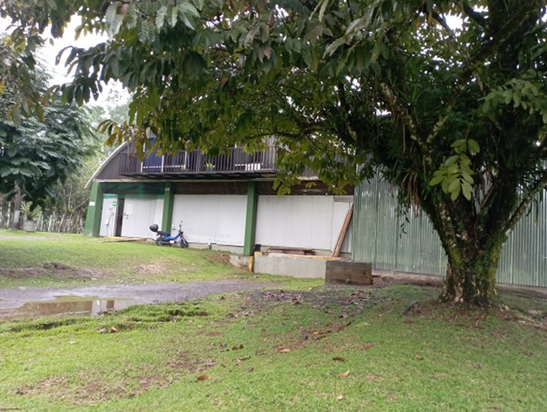

Surgimiento de “Nova International Company Foods”
El 02 de diciembre del 2021, en la zona de Horquetas, Sarapiquí, el Instituto de Desarrollo Rural (Inder) junto a Coope-Horquetas R.L., le brindaron el préstamo de una planta equipada a la empresa, que apenas venía surgiendo, de nombre “Nova International Company Foods”, con la condición de que se procesara palmito y que se le diera oportunidad de empleo a los socios y únicamente a sus familiares. Esta alianza duró aproximadamente un año, ya que a la empresa “Nova International Company Foods” se le presentó la oportunidad de procesar piña, pero esto incumplía con el trato que se les ordenó a los inicios de empezar operaciones en la fábrica.
A mediados de agosto de 2022, la empresa “Nova International Company Foods” se trasladó a las instalaciones de esta, la cual está ubicada en el centro de Horquetas de Sarapiquí. Es así, como la empresa abrió sus puertas para que las personas pudieran adquirir empleo, sin necesidad de que fueran familia de los socios y gracias al éxito de la marca, se da empleo a 35 personas, de las cuales el 50% son mujeres jefas de hogar, dos personas con capacidades diferentes y el restante del personal, son hombres y mujeres jóvenes.
Hitos Importantes de Nova International Company Foods
- 02 de diciembre de 2021 - Fundación de “Nova International Company Foods” en Horquetas, Sarapiquí.
- 15 de enero de 2022 - Alianza con el Instituto de Desarrollo Rural (Inder) para el procesamiento de palmito.
- 20 de marzo de 2022 - Expansión a la producción de piña y traslado a la planta "Corazón Tierno".
- 10 de agosto de 2022 - Traslado definitivo a nuevas instalaciones en Horquetas de Sarapiquí.
- 01 de septiembre de 2022 - Contratación de 35 empleados, incluyendo mujeres jefas de hogar.
- 15 de octubre de 2022 - Inicio de la compra de materia prima a agricultores locales para apoyar a las comunidades.